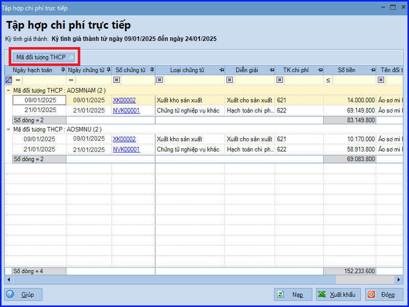
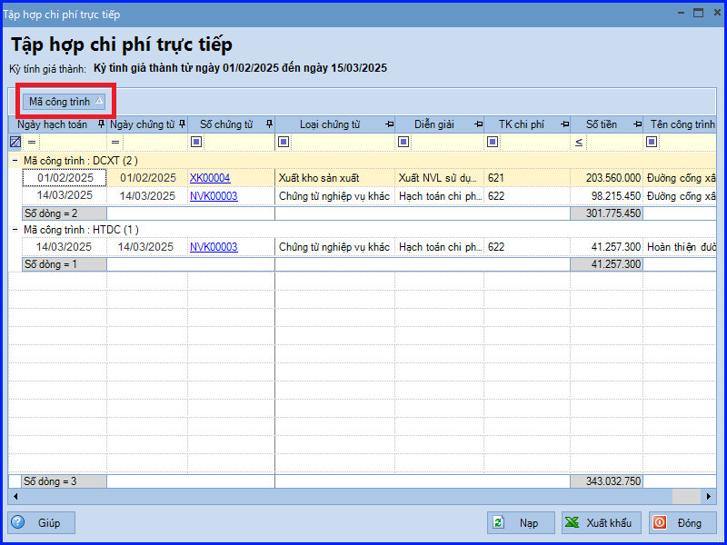
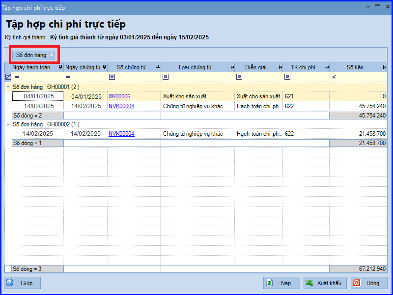
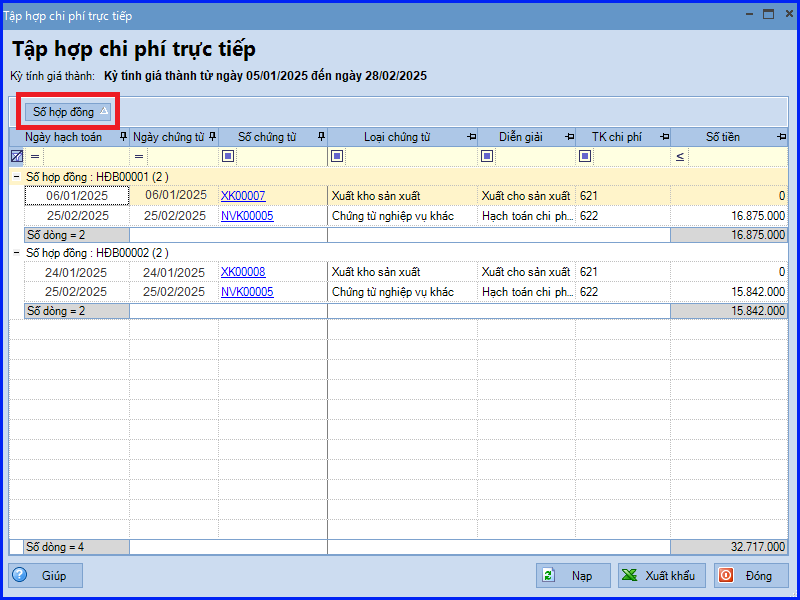

Hướng dẫn cách tập hợp chi phí trực tiếp trên Misa theo Thông tư 200/2014/TT-BTC
I. Tổng quan về nội dung và các bước thực hiện tập hợp chi phí trực tiếp theo Thông tư 200/2014/TT-BTC
1. Nội dung tập hợp chi phí trực tiếp
- Tập hợp toàn bộ các khoản chi phí trực tiếp đã phát sinh trong kỳ tính giá thành cho từng đối tượng Tập Hợp Chi Phí/công trình/đơn đặt hàng/hợp đồng bán, phục vụ cho việc kiểm tra đối chiếu khi tính giá thành.
2. Các bước thực hiện tập hợp chi phí trực tiếp
- Bước 1: Tính giá thành giản đơn/hệ số, tỷ lệ
- Bước 2: Tính giá thành theo công trình
- Bước 3: Tính giá thành theo đơn đặt hàng
- Bước 4: Tính giá thành theo hợp đồng bán
II. Chi tiết từng bước tập hợp chi phí trực tiếp trên Misa theo Thông tư 200/2014/TT-BTC
Bước 1: Tính giá thành giản đơn/hệ số, tỷ lệ
- Vào phân hệ "Giá thành" => chọn tab "Sản xuất liên tục – Giản đơn" (hoặc "Sản xuất liên tục – Hệ số, tỷ lệ").
- Chọn kỳ tính giá thành từ danh sách, sau đó nhấn chuột phải chọn "Tập hợp chi phí trực tiếp".
- Chương trình tự động tổng hợp các chứng từ hạch toán vào TK 621, 622, 627, có theo dõi chi tiết theo các đối tượng Tập Hợp Chi Phí phát sinh thuộc vào kỳ tính giá thành đang chọn.

- Các bạn ấn "Đóng", sau khi kiểm tra xong.
Bước 2: Tính giá thành theo công trình
- Vào phân hệ "Giá thành" => chọn tab "Công trình".
- Chọn kỳ tính giá thành từ danh sách, sau đó nhấn chuột phải chọn "Tập hợp chi phí trực tiếp".
- Chương trình tự động tổng hợp các chứng từ hạch toán vào TK 621, 622, 627, có theo dõi chi tiết theo các công trình/hạng mục công trình phát sinh thuộc vào kỳ tính giá thành đang chọn.

- Các bạn ấn "Đóng", sau khi kiểm tra xong.
Bước 3: Tính giá thành theo đơn đặt hàng
- Vào phân hệ "Giá thành" => chọn tab "Đơn hàng".
- Chọn kỳ tính giá thành từ danh sách, sau đó nhấn chuột phải chọn "Tập hợp chi phí trực tiếp".
- Chương trình tự động tổng hợp các chứng từ hạch toán vào TK 621, 622, 627, có theo dõi chi tiết theo các đơn đặt hàng phát sinh thuộc vào kỳ tính giá thành đang chọn.

- Các bạn ấn "Đóng", sau khi kiểm tra xong.
Bước 4: Tính giá thành theo hợp đồng bán
- Vào phân hệ "Giá thành" => chọn tab "Hợp đồng".
- Chọn kỳ tính giá thành từ danh sách, sau đó nhấn chuột phải chọn "Tập hợp chi phí trực tiếp".
- Chương trình tự động tổng hợp các chứng từ hạch toán vào TK 621, 622, 627, có theo dõi chi tiết theo các hợp đồng bán phát sinh thuộc vào kỳ tính giá thành đang chọn.

- Các bạn ấn "Đóng", sau khi kiểm tra xong.
CHÚ Ý:
CHÚ Ý:
- Các bạn có thể xuất khẩu bảng tập hợp chi phí trực tiếp ra tệp excel bẳng cách chọn chức năng "Xuất khẩu".
KẾ TOÁN DIỆU TÂM chúc các bạn làm tốt!
=============================
Nếu bạn muốn thành thạo các kỹ năng làm kế toán trên phần mềm Misa
Thì bạn có thể tham khảo "Khóa Học Thực Hành Kế Toán Trên Phần Mềm Misa" tại Công ty đào tạo Kế Toán Diệu Tâm
Trong khóa học này, bạn sẽ được dạy cách lên sổ sách, lập báo cáo tài chính trên phần mềm Misa
Chi tiết về chương trình đào tạo bạn xem tại đây nhé: Khóa học thực hành kế toán trên Misa
=============================
=============================
Nếu bạn muốn thành thạo các kỹ năng làm kế toán trên phần mềm Misa
Thì bạn có thể tham khảo "Khóa Học Thực Hành Kế Toán Trên Phần Mềm Misa" tại Công ty đào tạo Kế Toán Diệu Tâm
Trong khóa học này, bạn sẽ được dạy cách lên sổ sách, lập báo cáo tài chính trên phần mềm Misa
Chi tiết về chương trình đào tạo bạn xem tại đây nhé: Khóa học thực hành kế toán trên Misa
=============================